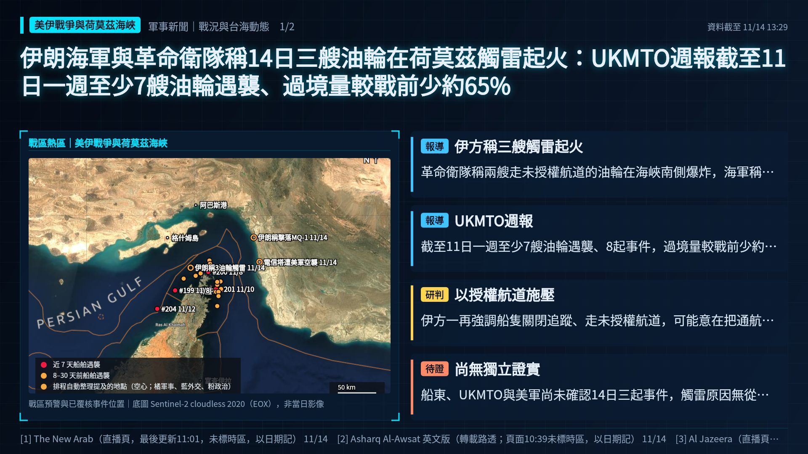
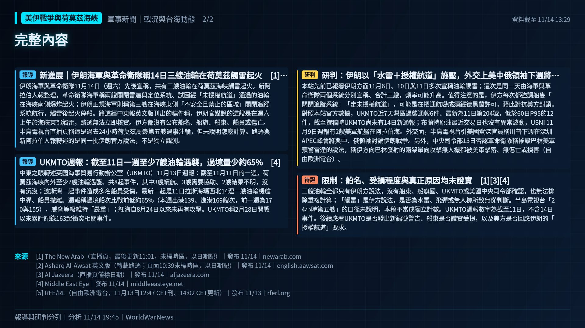

伊朗海軍與革命衛隊稱14日三艘油輪在荷莫茲觸雷起火：UKMTO週報截至11日一週至少7艘油輪遇襲、過境量較戰前少約65%


報導新進展｜伊朗海軍與革命衛隊稱14日三艘油輪在荷莫茲觸雷起火
伊朗海軍與革命衛隊11月14日（週六）先後宣稱，共有三艘油輪在荷莫茲海峽觸雷起火。新阿拉伯人報整理，革命衛隊海軍稱兩艘關閉雷達與定位系統、試圖經「未授權航道」通過的油輪在海峽南側爆炸起火；伊朗正規海軍則稱第三艘在海峽東側「不安全且禁止的區域」關閉追蹤系統航行，觸雷後起火停船。路透經中東報英文版刊出的稿件稱，伊朗官媒說的這艘是在週六上午於海峽東部觸雷，路透無法立即核實。伊方都沒有公布船名、船旗、船東、船員或傷亡。半島電視台直播頁稱這是過去24小時荷莫茲周邊第五艘遇事油輪，但未說明怎麼計算。路透與新阿拉伯人報轉述的是同一批伊朗官方說法，不是獨立觀測。
報導UKMTO週報：截至11日一週至少7艘油輪遇襲，過境量少約65%
中東之眼轉述英國海事貿易行動辦公室（UKMTO）11月13日週報：截至11月11日的一週，荷莫茲海峽內外至少7艘油輪遇襲、共8起事件，其中3艘續航、3艘需要協助、2艘結果不明，沒有沉沒；波斯灣一起事件造成多名船員受傷，最新一起是11日拉斯海瑪西北14浬一艘油輪機艙中彈、船員撤離。週報稱過境船次比戰前低約65%（本週出港139、進港169艘次，前一週為170與155），威脅等級維持「嚴重」；紅海自8月24日以來未再有攻擊。UKMTO稱2月28日開戰以來累計記錄163起衝突相關事件。
研判研判：伊朗以「水雷＋授權航道」施壓，外交上美中俄領袖下週將談伊朗
本站先前已報導伊朗方面11月6日、10日與11日多次宣稱油輪觸雷；這次是同一天由海軍與革命衛隊兩個系統分別宣稱、合計三艘，頻率可能升高。值得注意的是，伊方每次都強調船隻「關閉追蹤系統」「走未授權航道」，可能是在把通航變成須經德黑蘭許可，藉此對抗美方封鎖。對照本站官方數據，UKMTO近7天灣區遇襲通報6件、最新為11日第204號，低於60日P95的12件，截至撰稿時UKMTO尚未有14日新通報；布蘭特原油最近交易日也沒有異常波動，USNI 11月9日週報有2艘美軍航艦在阿拉伯海。外交面，半島電視台引美國資深官員稱川普下週在深圳APEC峰會將與中、俄領袖討論伊朗戰爭。另外，中央司令部13日否認革命衛隊稱摧毀巴林美軍預警雷達的說法，稱伊方向巴林發射的兩架單向攻擊無人機都被美軍擊落、無傷亡或損害（自由歐洲電台）。
待證限制：船名、受損程度與真正原因均未證實
三艘油輪全都只有伊朗方說法，沒有船東、船旗國、UKMTO或美國中央司令部確認，也無法排除重複計算；「觸雷」是伊方說法，是否為水雷、飛彈或無人機所致無從判斷。半島電視台「24小時第五艘」的口徑未說明，本稿不當成獨立計數。UKMTO週報數字為截至11日，不含14日事件。後續應看UKMTO是否發出新編號警告、船東是否證實受損，以及美方是否回應伊朗的「授權航道」要求。
- [1] The New Arab（直播頁，最後更新11:01，未標時區，以日期記）｜發布 11/14
- [2] Asharq Al-Awsat 英文版（轉載路透；頁面10:39未標時區，以日期記）｜發布 11/14
- [3] Al Jazeera（直播頁僅標日期）｜發布 11/14
- [4] Middle East Eye｜發布 11/14
- [5] RFE/RL（自由歐洲電台，11月13日12:47 CET刊、14:02 CET更新）｜發布 11/13